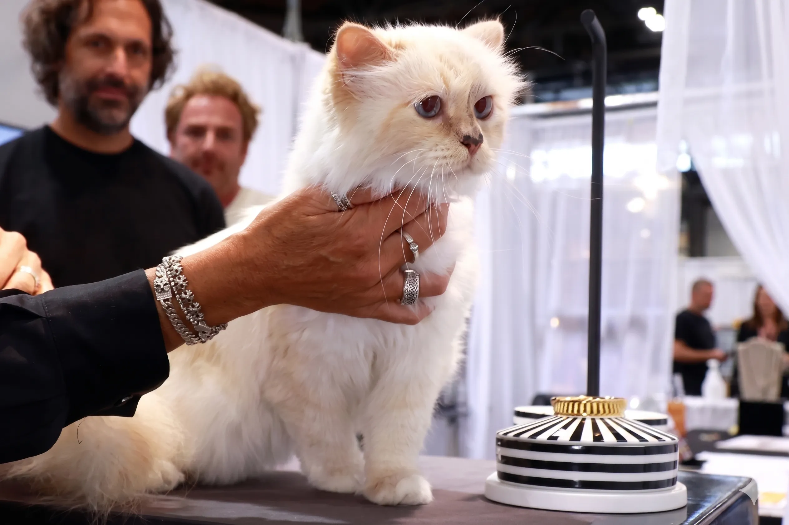

Choupette Was Promised £850,000 — Seven Years Later, She Has Received Absolutely Nothing: The Pet Estate Planning Crisis Every Owner Must Understand


📋 What You'll Learn in This Article
- Choupette's Story — From Two Personal Maids to a Caretaker Working Part-Time
- The Legal Reason Choupette Has Received Nothing — French Law Explained
- The Mystery Plaintiff — Why the Estate Is in Even Deeper Trouble in 2026
- Can Pets Legally Inherit? The Answer in the US, UK & France
- The Other Famous Pet Inheritances — Gunther, Trouble, Blackie & What We Can Learn
- Pet Trusts 101 — The Most Legally Secure Way to Protect Your Animal
- The UK Specifics — What the Trustee Act 2000 Means for Your Pet
- The US Specifics — Pet Trusts Available in All 50 States
- Pet Trust vs Will Provision — Which Is Right for You?
- How Much Money Should You Set Aside? Calculating Your Pet's Needs
- Your Step-by-Step Pet Estate Planning Checklist
- Frequently Asked Questions
📊 The Numbers: Karl Lagerfeld's estate: approximately £150–300 million. Amount reportedly promised to Choupette's caretaker: over €1 million (£850,000). Amount received by caretaker Françoise Caçote as of June 2026: £0. UK adults over 30 who are unaware that pets are treated as assets in an estate: 59% (Association of Lifetime Lawyers, 2025).
Choupette's Story — From Two Personal Maids to a Caretaker Working Part-Time
Choupette did not start life as Lagerfeld's cat. She was originally the pet of French model Baptiste Giabiconi, who left her with Lagerfeld one Christmas while he was away. Lagerfeld, famously, refused to give her back. "It was love at first sight," he later said in an interview. He described her as "a sort of silent Jean Harlow" — luminous, imperious, and entirely in charge of every room she entered. She had bright blue eyes, snow-white and cream fur, and, according to Lagerfeld, an uncompromising personality: "She hates other animals and she hates children. She stays always with me."
During Lagerfeld's lifetime, Choupette lived in his Seine-side Paris apartment attended by two personal maids whose duties included keeping detailed written notes of her daily activities — which Lagerfeld requested so he could read them when he returned home from travel. She had a hairdresser, a private chef, and a collection of diamond necklaces. By 2015, she had earned $3 million from modelling contracts, including a high-profile collaboration with Japanese beauty company Shu Uemera and a campaign with German car brand Vauxhall Corsa. She had, in every meaningful sense, her own career.
When Lagerfeld died in February 2019 from cancer, Choupette passed into the care of Caçote, who moved into a Paris apartment that Lagerfeld had reportedly purchased for her and her family. The cat's Instagram account, with more than 265,000 followers, continued to document a life of visible luxury — a 13th birthday celebrated at the Palace of Versailles, fashion campaign appearances managed by agent Lucas Bérullier, a domestic routine that Caçote describes with visible affection. "The most important thing is that she's happy, surrounded by love and affection, and protected as Karl would have wanted," she said.
But behind the curated Instagram posts, the reality is considerably less glamorous. Caçote works part-time to support Choupette's ongoing care costs. She has engaged lawyers at significant personal expense. She has described the situation as "complex" and the legal costs as "expensive." She continues to care for the cat impeccably — "she receives all the love, attention, and care she needs," Caçote says — but the financial resources Lagerfeld intended for that purpose have not arrived, and it is no longer clear they ever will.
The Legal Reason Choupette Has Received Nothing — French Inheritance Law Explained
The first thing to understand about Choupette's situation is that French law — like most legal systems in the world — does not allow animals to directly inherit money or property. In France, pets are classified as "beings endowed with sentience" under civil law, but they remain, for the purposes of property and succession, personal goods rather than legal persons. A cat cannot own a bank account. A dog cannot hold title to a property. Under French succession rules, any direct bequest to an animal fails — the animal cannot be the beneficiary of a will in any enforceable sense.
What Lagerfeld appears to have done — the details of the will are not public — was structure his estate so that funds would be provided to Caçote, specifically for Choupette's care, rather than to Choupette directly. This is the legally correct approach. But it depends entirely on the executor fulfilling the will's instructions, the estate being solvent after all other claims are settled, and the will itself being legally unchallenged. None of those conditions have been met in the Lagerfeld case.
The estate has been locked for years in a major dispute with the French tax authorities. Lagerfeld was renowned for his extravagant lifestyle and owned an extensive collection of lavishly furnished properties across France and Germany. The complexity of that estate — combined with what appears to have been a significant tax liability — has meant that no distributions have been made to beneficiaries, seven years after his death. The dispute with French tax authorities has led to speculation that the estate may have been substantially depleted before any inheritance could be paid out.
The Mystery Plaintiff — Why the Estate Is in Even Deeper Trouble in 2026
The tax dispute alone would be enough to explain the delay. But in early 2026, the situation became significantly more complicated. A mystery plaintiff emerged to challenge the legality of Lagerfeld's will itself. The identity of this plaintiff has not been publicly disclosed, but the legal implications are serious. Under French inheritance law, if a will is found to be invalid, the estate reverts to the next of kin under standard intestacy rules.
Lagerfeld had no children. Both of his sisters, Christiane and Thea, died before him. His surviving relatives — nieces and nephews — are a scattered group with whom Lagerfeld had almost no relationship. He reportedly last saw his sister Christiane in 1974. His US-based relatives were not invited to the 2023 Met Gala, where his fashion legacy was the event's official theme. These were not people Lagerfeld wanted to inherit his estate. They were, however, people who would legally inherit it if his will was annulled.
If that happens, Choupette and Caçote could be sidestepped entirely. The fortune — or whatever remains of it after the tax dispute — would flow to people Lagerfeld spent decades deliberately excluding from his life. And Choupette, the 14-year-old cat who once had her own maids and earned millions through modelling, would be entirely dependent on her caretaker's personal income and goodwill.
🩺 Clinical Perspective: In my veterinary practice, I regularly encounter clients who assume their pets will be "taken care of" by family members after they are gone — without any formal legal arrangement in place. The Choupette situation illustrates the painful reality: even the most explicit public declarations of intent, combined with an estate worth hundreds of millions of pounds, cannot guarantee an animal's care if the legal documentation is not watertight and legally defended. A trust is not paperwork. It is the difference between your pet being genuinely protected and your pet being entirely dependent on other people's goodwill and financial capacity.
Can Pets Legally Inherit? The Answer in the US, UK & France
In every major legal jurisdiction, the answer to "can my pet inherit?" is the same: no, not directly. Pets are classified as property under the law, not as legal persons. A direct bequest to an animal in a will is legally void — it fails at the point of execution, and the money falls to whoever is designated to receive the residuary estate. This applies in France, England and Wales, Scotland, every US state, Canada, Australia, and virtually every other country with a codified legal system.
What varies significantly between jurisdictions is how robust the alternative mechanisms are. In the United States, all 50 states have enacted pet trust legislation, primarily under the Uniform Trust Code, making it straightforward to create a legally enforceable arrangement that names a trustee, designates funds, and protects your animal with the full force of trust law. In England and Wales, pet trusts are recognised under the Trustee Act 2000, though the legal framework is slightly less explicit than in the US — the trust is structured to benefit a person caring for the animal, rather than the animal itself, since only humans can be legal beneficiaries under English trust law. In France, non-charitable purpose trusts — the mechanism closest to a pet trust — face significant legal complexity, which is part of why Lagerfeld's arrangements have proved so difficult to enforce.
Also Read
More Cat Care Guides & Advice →The Other Famous Pet Inheritances — Gunther, Trouble, Blackie & What We Can Learn
Choupette is far from the first animal to be at the centre of a high-profile inheritance story — though her situation is, so far, the most dramatically unresolved. The history of wealthy pet owners trying to provide for their animals after death is both colourful and instructive.
| Pet | Owner | Inheritance | What Actually Happened |
|---|---|---|---|
| Gunther IV (German Shepherd) | Countess Carlotta Liebenstein (Germany, 1992) | $80M (grown to $200–400M through investments) | Successfully managed through a trust structure. Gunther IV purchased Madonna's Miami mansion. Subject of Netflix documentary. Still "wealthy" today. |
| Trouble (Maltese) | Leona Helmsley (US, 2007) | $12M — reduced by judge to $2M | A surrogate court judge found $12M excessive and reduced it to $2M. Still lived well — $100K/year security costs due to death threats. Died age 12 in 2011. |
| Blackie (cat) | Ben Rea (UK, 1988) | $12.5M to cat and three charities | Guinness World Record "richest cat." Funds managed through cat charities and a trusted caretaker. Successfully distributed. |
| Oprah's dogs | Oprah Winfrey (US) | $30M trust set aside | Trust established during owner's lifetime. No legal dispute. Considered a gold-standard example of advance pet estate planning. |
| Choupette (Birman cat) | Karl Lagerfeld (France, 2019) | €1M+ (£850,000) | Zero received after 7 years. Caretaker works part-time. Estate in dispute with French tax authorities. Will challenged by mystery plaintiff in 2026. |
The most instructive comparison in this table is between Oprah Winfrey and Karl Lagerfeld. Both are extremely wealthy individuals who clearly loved their animals deeply. Oprah set up her pet trust during her lifetime, with professional trustees and clear documentation. Seven years later, there is no dispute, no legal challenge, and no uncertainty about her dogs' future. Lagerfeld's arrangements — whatever they were — were not legally robust enough to survive the combination of a complex estate, a tax dispute, and a single unknown legal challenge. The difference between those two outcomes is not wealth. It is planning.
Pet Trusts 101 — The Most Legally Secure Way to Protect Your Animal
A pet trust is a legally enforceable arrangement in which funds are set aside specifically for your pet's care, managed by a designated trustee, administered for a designated caregiver, and governed by written instructions you provide. Unlike a simple gift of money to a person in a will, a pet trust creates a legal obligation. The trustee has a fiduciary duty — the highest legal standard of care — to ensure the money is used only for the purposes you specified. If they fail, they can be sued.
A well-drafted pet trust has six core components. First, it identifies every animal covered by the trust, including microchip or registration numbers to prevent substitution. Second, it names a trustee — ideally a professional or institutional trustee for large trusts, or a trusted individual who is not the same person as the caregiver, to provide a check-and-balance structure. Third, it names a caregiver who will provide day-to-day care for the animal. Fourth, it names a trust enforcer — a person authorised to go to court and enforce the terms of the trust if the trustee or caregiver fails to comply. Fifth, it specifies in writing how the animal should be cared for: diet, veterinary requirements, exercise routine, grooming schedule, and behavioural preferences. Sixth, it designates a remainder beneficiary — the person or charity who receives any funds remaining when the animal dies.
The care instructions section is one of the most important and most frequently skipped. A trust that says "provide appropriate care" is significantly weaker than one that says "Bella is fed Royal Canin Senior formula, twice daily, at 7 AM and 6 PM. She receives a monthly grooming appointment. She requires annual veterinary check-ups and is sensitive to changes in routine. She should not be rehomed to a property with other cats." The more specific your instructions, the harder it is for a trustee or caregiver to argue that they are fulfilling your wishes when they are not.
The UK Specifics — What the Trustee Act 2000 Means for Your Pet
In England and Wales, pet trusts are recognised under trust law principles and the Trustee Act 2000, which governs how trustees must manage trust assets. The UK does not have a specific statute called a "Pet Trust Act" — instead, animal trusts are structured using existing trust law mechanisms, adapted to work around the legal constraint that animals cannot be beneficiaries (only humans can hold beneficial interests under English trust law).
In practice, a UK pet trust works by naming the caregiver as the human beneficiary of the trust — but linking the trust's continuation explicitly to the animal's ongoing care. The trust document specifies that funds are to be used only for the benefit of the named animal, with detailed care instructions. The trustee owes legal duties to ensure the funds are used appropriately. If the caregiver stops caring for the animal, or the animal dies, the trust ends and remaining funds pass to the nominated remainder beneficiary.
The Association of Lifetime Lawyers, which represents qualified legal professionals specialising in wills and estate planning across the UK, published research in 2025 finding that 59% of UK adults over 30 were unaware that pets are treated as assets in an estate — meaning they cannot inherit and may be disposed of by an executor without specific instructions. The charity strongly urges all pet owners to include explicit pet provisions in their wills, even if they do not set up a formal trust. At minimum, a will should name a preferred caregiver, identify the animals by description and microchip number, and include a conditional cash legacy for care costs tied to the caregiver's acceptance of responsibility for the animal.
For more complex situations — animals with long expected lifespans, high care costs, or owners without obvious trusted individuals to act as caregiver and trustee — specialist estate planning solicitors in the UK recommend a formal purpose trust. These are subject to inheritance tax rules and trustee duties but provide the strongest available legal protection.
The US Specifics — Pet Trusts Available in All 50 States
The United States has the most developed legal framework for pet trusts of any country in the world. All 50 states have enacted pet trust legislation, most following the Uniform Trust Code's Section 408, which explicitly permits trusts for the care of designated animals alive during the settlor's lifetime. Unlike in England and Wales, the animal itself can be named as the beneficiary in a statutory pet trust — the law recognises this specific purpose and treats it accordingly.
In a US statutory pet trust, the law provides several automatic protections. Courts can reduce the trust amount if they find it is excessive relative to the animal's actual care needs — this is what happened to Leona Helmsley's $12 million bequest for Trouble, which was reduced to $2 million by a New York surrogate court. Courts can also appoint a new trustee if the named trustee is unwilling or unable to serve. The trust is designed to be self-enforcing: anyone with an interest in the animal's welfare can petition a court to review compliance.
Estate planning attorneys in the US typically recommend the following structure for a pet trust: a separate trustee from the caregiver, to provide independent oversight; an annual accounting requirement so the trustee must document how funds have been spent; a "protector" role — an independent third party who can replace the trustee if needed; and a remainder beneficiary, who receives leftover funds after the pet dies. This provides an incentive for the remainder beneficiary to alert the trustee if the caregiver appears to be misusing funds or neglecting the animal — since any money saved goes to them.
Pet Trust vs Will Provision — Which Is Right for You?
Most people do not set up pet trusts, primarily because of cost and complexity. A professionally drafted pet trust in the UK typically costs between £500 and £2,000 depending on complexity. In the US, costs range from approximately $500 to $2,500. For owners of healthy young animals with modest care costs and a clear, trusted caregiver, a will provision may be adequate. For owners of animals with long expected lifespans, significant ongoing medical needs, or no obvious single trusted caregiver, a pet trust is substantially safer.
The critical difference is enforceability. A will provision for a pet typically takes the form of a conditional legacy — you leave a sum of money to a named person, on the condition that they care for your named animal. The problem is that once the money is transferred, there is no mechanism to ensure it is spent on the pet. If the named caregiver spends the money on themselves, you have no legal recourse — because you are dead, and the pet has no legal standing to sue. A pet trust, by contrast, places the money in the hands of a trustee with a fiduciary duty. The caregiver receives reimbursements for documented pet expenses, not a lump sum. The trustee can be held legally accountable. The trust enforcer can take action on the animal's behalf.
How Much Money Should You Set Aside? Calculating Your Pet's Needs
Estate planning attorneys and veterinary professionals consistently advise setting aside three to five times your pet's average annual care cost, adjusted for the animal's current age and expected remaining lifespan. The formula needs to account for both routine expenses and the unpredictable costs of veterinary emergencies, which tend to increase significantly as animals age.
In the UK, average annual pet care costs (excluding unexpected veterinary bills) run approximately £1,000–£1,500 for a cat and £1,500–£2,500 for a dog, depending on size and breed. In the US, comparable figures are roughly $1,200–$2,000 for a cat and $2,000–$4,000 for a dog annually. A cat with a remaining lifespan of 12 years and annual costs of £1,200 would suggest a baseline trust of £14,400, plus a buffer of two additional years' costs (£2,400) for a total of approximately £16,800. A large dog with a seven-year remaining lifespan and annual costs of £2,500 would suggest approximately £20,000 plus a buffer of £5,000, totalling roughly £25,000.
Town and Country Law, a UK pet trust specialist, recommends that clients set aside 3–5 times annual expenses as a general rule and then review that figure annually as the animal ages and care needs change. They also note that veterinary costs for specialist treatment — cancer care, orthopaedic surgery, cardiology — can run to thousands of pounds per episode and should be factored in as a contingency fund above and beyond routine expenses. Funding for an additional two years of expenses above the estimated total lifespan is widely recommended to account for underestimated lifespans and unexpected medical costs.
Your Step-by-Step Pet Estate Planning Checklist
✅ Pet Estate Planning — Complete Checklist
- Identify your primary caregiver — someone who knows your pet, has the capacity to care for them, and has agreed in advance to take on the responsibility
- Identify a backup caregiver — in case your primary choice is unable to serve when the time comes
- Have an honest conversation with both — confirm they are willing, understand the animal's needs, and know where your pet care documents are kept
- Identify a trustee — someone separate from the caregiver who can manage funds objectively; for large trusts, consider a professional or institutional trustee
- Calculate realistic annual care costs — include food, routine vet visits, grooming, boarding, insurance, and a contingency fund for emergencies
- Determine the trust amount — multiply annual costs by expected remaining lifespan plus two years' buffer
- Consult an estate planning attorney — in the UK: seek a solicitor specialising in wills and trusts; in the US: look for an attorney with experience in pet trust legislation in your state
- Draft a detailed pet care plan — diet, exercise, medical needs, behavioural preferences, microchip number, veterinarian details
- Name a remainder beneficiary — who receives any funds left when the animal dies
- Name a trust enforcer — a person authorised to take legal action if the trust's terms are not being followed
- Store all documents securely — and ensure your attorney, executor, and designated caregiver all know where they are
- Review annually — update the trust amount as care costs change and as your animal ages
- Consider pet insurance now — reducing future care costs lowers the amount your trust needs to hold
Frequently Asked Questions
Q: Can a pet legally inherit money in the US or UK?
A: No — not directly. In both the US and UK, pets are classified as property under the law, not as legal persons. A direct bequest to a pet in a will is void and fails automatically, with the funds passing to the residuary beneficiaries instead. However, owners can provide for their pets indirectly through a pet trust (available in all 50 US states, and recognised under the Trustee Act 2000 in England and Wales), by leaving a conditional legacy to a named caregiver, or through other trust mechanisms. In France, the same legal constraint applies — which is why Choupette cannot receive money directly.
Q: What happened to Choupette's inheritance from Karl Lagerfeld?
A: Karl Lagerfeld died in February 2019, and his cat Choupette was widely reported to have been promised more than €1 million (approximately £850,000). Seven years later, caretaker Françoise Caçote told The Atlantic: "I want to be completely transparent: today, we have received absolutely nothing." Lagerfeld's estate has been locked in a dispute with the French tax authorities, which has prevented any distributions. In early 2026, an anonymous plaintiff emerged to challenge the will's legality — a development that could reroute the entire estate to distant family members Lagerfeld had cut from his life decades earlier. Caçote now works part-time to fund Choupette's care while legal proceedings continue.
Q: What is a pet trust and how does it work?
A: A pet trust is a legally enforceable arrangement where you set aside a designated sum of money, managed by a named trustee with fiduciary duties, for the sole purpose of caring for your animal. The trust document names a caregiver who provides day-to-day care, a trustee who manages the money and ensures it is spent appropriately, a trust enforcer who can take legal action if terms are violated, and a remainder beneficiary who receives leftover funds after the animal dies. In the US, it is available in all 50 states. In the UK, it is recognised under the Trustee Act 2000 and trust law principles.
Q: What is the difference between a pet trust and including a pet in your will?
A: A will provision (conditional legacy) gives a named caregiver a sum of money for your pet's care, but there is no legal obligation for that person to spend it on the animal — if they misuse the funds, there is typically no recourse because the pet has no legal standing and you are deceased. A pet trust places the money under the management of a separate trustee with a fiduciary duty, disburses funds only as documented reimbursements for pet care costs, and can be legally enforced by the designated trust enforcer. Pet trusts cost more to establish but provide substantially stronger protection, particularly for long-lived animals or those with significant ongoing medical needs.
Q: How much money should I leave in a pet trust?
A: Estate planning professionals typically recommend 3 to 5 times your pet's average annual care cost, plus a buffer of two additional years' expenses for unexpected veterinary emergencies. In the UK, basic annual cat care costs approximately £1,000–£1,500; dogs £1,500–£2,500 depending on size. In the US, comparable figures are $1,200–$2,000 for cats and $2,000–$4,000 for dogs annually. Multiply by expected remaining lifespan, add the buffer, and review annually. Factor in your animal's current health status and any anticipated specialist care requirements.
Q: What should UK pet owners do right now?
A: At minimum, ensure your will explicitly names a preferred caregiver for each of your animals, identifies them by description and microchip number, and includes a conditional cash legacy tied to the caregiver's acceptance of responsibility. For stronger protection — particularly for cats and other long-lived pets — set up a formal pet trust under the Trustee Act 2000 with the help of a solicitor specialising in wills and estate planning. Contact the Association of Lifetime Lawyers to find a qualified practitioner in your area. Do this now, not later — the survey evidence shows that 59% of UK adults over 30 have not considered this at all.
Conclusion — Choupette's Lesson for Every Pet Owner
Choupette is 14 years old. She lives in a Paris apartment with Françoise Caçote, who cares for her with evident devotion and goes to work part-time to pay for it. She appears in fashion campaigns managed by an agent. She has more than 265,000 Instagram followers. By most measures, she is a very well-cared-for cat — and that is entirely to Caçote's credit, not to any legal mechanism that Lagerfeld put in place.
The painful lesson of Choupette's situation is not that Lagerfeld did not love his cat — he clearly did, deeply, for the entirety of their life together. The lesson is that love, intention, and even a fortune of £150 million are not substitutes for a legally watertight estate plan. Seven years of uncertainty, expensive legal proceedings, a dispute with the French tax authorities, and an anonymous challenge to the will's validity have produced exactly the outcome that careful planning was supposed to prevent. The caretaker works to support the cat. The lawyers are still billing. The money has not arrived.
For the vast majority of pet owners, the solution is not complicated or expensive. A conversation with a solicitor or estate planning attorney, a realistic calculation of annual care costs, and a properly drafted trust or will provision can give your animal genuine legal protection — the kind that does not depend on goodwill, goodwill surviving financial pressure, or an estate navigating seven years of legal proceedings intact. Choupette got love. What she needed was a trust. Make sure your pet has both.
Dr. Amelia Richardson
DVM, Senior Veterinary Editor
Veterinarian with 12+ years of experience in small animal medicine, pet nutrition, and behavioural science. Passionate about helping pet owners provide the best long-term care — and security — for their animals.
Leave a Comment